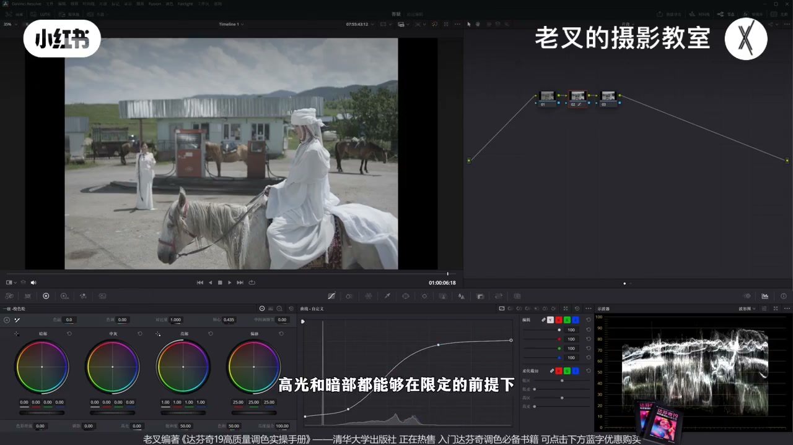
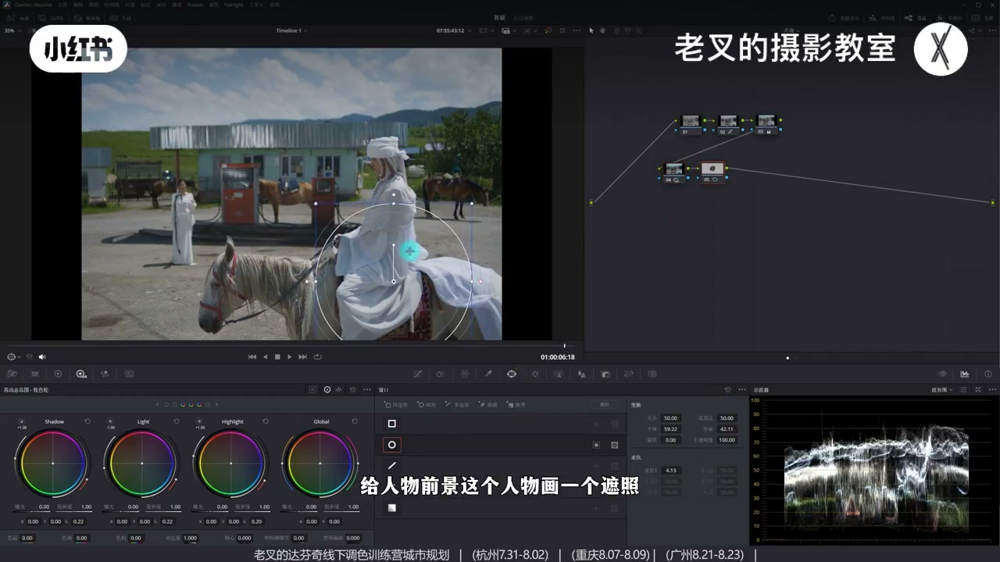
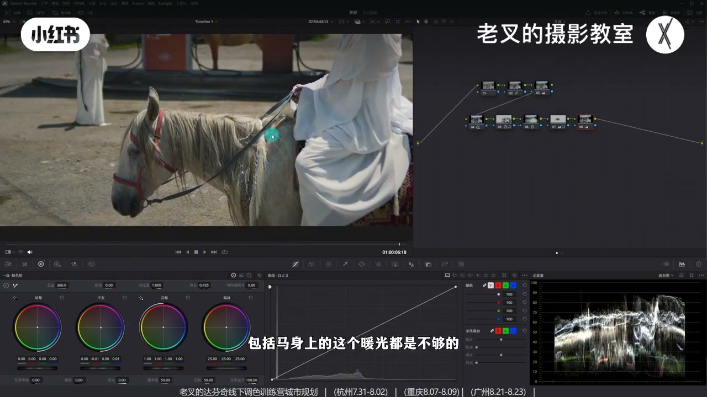
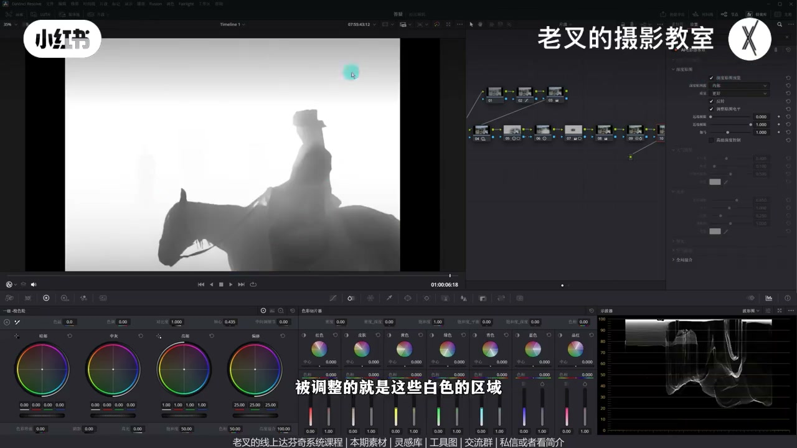
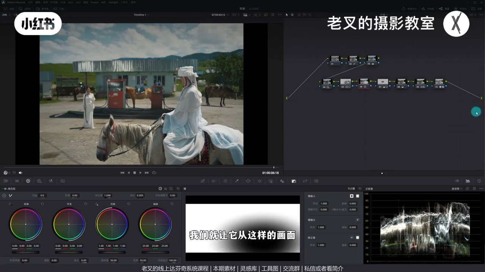

内容要点
群友要后室外景真实场景仿色。老叉强调颜色次要，影调才是风格：参考高光收在约 70、暗部抬到约 10%，中灰层次拉开。还原用可编辑样条线在限定高光/暗部两端内拉开中低调；HDR 再展中间调，遮罩提前景、外部节点压四周。颜色用全局加暖+中灰加冷留冷在中灰，蜘蛛网推蓝转青；电影感物效大气散射损分辨率去数码感。
知识结构
晴天高光约70、暗约10%；样条线两端夹住再展中低调。
HDR 压 Shadow/Light、抬 Highlight；遮罩提前景、外部压四周、中景略提。
缺暖先加暖，中灰加冷留冷在中灰；蜘蛛网蓝→青，密度控艳。
电影感物效：深度贴图控范围，分辨率损失+大气光；键输出回调。
后室外景仿色先锁波形区间，再在区间内展中调与主次；染色优先「补缺再回调」——高光可暖、冷落在中灰。RGB 混合器易把云留冷，不如色温+中灰轮。最后用物效损背景锐度去数码感。
00:00-01:57读参考：影调区间 + 样条线还原
参考舒服感颜色不是最重要：波形上高光收缩狠（晴天却约 70 出头）、暗部抬到约 10%，中灰层次拉开——这是最大特点。
灰片还原若只对齐区间仍发灰；硬加对比又把两端撑开。做法：先压高光端、抬暗部端限定范围，再在两侧打点展中低调。打不准就勾选曲线可编辑样条线，用杠杆微调高光/暗部波杆，3 号加饱和完成还原。

01:57-04:04HDR 展中间调；遮罩分主次
与参考比仍无聊：明暗范围同，中间调没拉开。HDR：略降 Shadow/Light，改 Highlight 起点偏暗再小幅抬 Highlight 曝光——人物与马毛层次更立体。
整体曝光过一致：前景人物遮罩对比+轴心略提；Alt/Option+O 外部节点对比+轴心右移略压四周——此消彼长让主体相对最亮。中间过暗再遮罩抬阴影滑块、略降高光防刺眼。素材与参考图可知识分享平台自取。

04:04-06:45加暖补缺，中灰加冷；蓝转青
参考偏冷又有暖感：蓝往青、暖留橙，整体青橙。己方不缺冷缺暖：先全局加暖，同节点中灰轮往右下青蓝加冷——暖补上、冷主要留中灰。
蓝不够青则蜘蛛网拉蓝转青，提青/蓝密度并略降青饱和控艳。为何不用 RGB 混合器一刀切：云参考是暖的，混合器易留冷；中灰加冷对高光/暗部影响更小，且中灰承载信息最多。

06:45-09:51电影感物效去数码感，收束微调
胶外还缺「少锐利」：拖电影感物效到新节点，勾选深度贴图预览调远近端——前景不受影响、中景少影响。主要用大气散射里的分辨率损失拉高虚背景，略抬大气光找回亮度；全局混合或键输出增益约 0.6 回调。
物效变暗可回外部节点轴心左移找曝光。马、脸略暗、背景饱和可自调。整体接近参考即可；力度按需求回调。


完整转录（459段）
以下文本由 Whisper medium 模型自动转录，可能存在少量识别误差，已尽可能修正。
前几天在交流群里有一位朋友问我能不能出一期后视外景的真实场景仿色
他给我发了这几张图
我跳了这个效果
我们尝试用这个画面做出仿色的效果
我们先看参考图
其实从参考图中我们能感受到
它想要有这么舒服的一个效果
颜色不是最重要的
从波线图上来看
影调才是它的一个风格最大的一个走向
它的高光收缩是比较厉害的
你看是个大晴天
可是它的高光在70出头
暗部也往上提了只有10%左右
但是它的中晖部分的层次又拉得比较开
这就是它这个画面最大的特点
再看到我们的画面
它是个灰片
我们自然要先给它做还原
我们建立几个节点
这个时候还原要注意
如果只是按照参考图的曝光区间
也就是让它的高光在70到80之间
暗部在10左右
高光接再拉上去
如果只是这样做的话
你会感觉它画面有点发灰
那如果说我再给它增加对比度的话
加了之后虽然它不灰了
可是它的高光和暗部又往外扩了对不对
这时候我们可以考虑一个方法
要保证高光不会太亮
暗部不会太暗
同时还能够展开中低调的话
那么我们是不是就可以
把高光这一端先给它往下降
暗部这一端给它往上提
让它的高光和暗部有一个范围
然后再在两侧打上几个点
让它暗部往下降
亮部往上提
大概是这个效果
通过这个方式你会发现
高光和暗部都能够在限定的前提下
拉开中低调的反差
但是有个问题
中间这个点该怎么打
过度能不能让它再顺滑一点呢
如果你自己打点打得不准的话
我们可以打开曲线右上角三个点中
可编辑的样条线把它勾选了
然后此时同样把高光这一端往下降
你会发现这里多出了一根杠杆
对不对
把这个杠杆
也就是这个波杆给它往上提
那高光就往上走了
暗部同样给它稍微往上走一点
再把暗部这里延伸出来的波杆
给它往下降
我们可以多次的微调这个参数
让它能够达到我们想要的一个结果
好
大概到这个程度就挺好了
我们再在后面3号节点
给它加一点饱和度
那么这样我们就还原好了
目前是还原
我们与参考图做在对比
感觉像
但是还差很多
差在哪呢
其实我们看到它这个画面中
这个层次比我们要强太多了
我们这个还是过于无聊了
对不对
从波形图上也看得出来
我们把波形图放大
在波形图上
我们的画面
虽然明暗范围跟它是一样的
但是我们中间调的部分
没有它拉得这么开
这时候就需要精细化的曝光调整
我们经历几个节点拉到第二排
首先我们要利用HGR色轮
来稍微降低一点
Shadow色轮的曝光
Light色轮也可以稍微降低一点
让它中灰和暗部能够往下降
我们不是要拉开中间调部分的反差吗
对吧
然后再稍微改一下
Highlight色轮的起点
让它起点能够暗一点
再小幅提高一点
Highlight色轮的曝光
好
大概到这个程度
我们看到
人物的这个层次
是不是就变得更加明确了
对不对
包括身上的高光
都能够更加立体
特别是这个马的毛
是不是效果还挺好的
对吧
整体感觉有了
可是我们画面
目前整体的曝光过于一致
没有主次的区分
所以我们可以在后面这个节点中
给人物
前景这个人物
画一个遮罩
然后通过对比度
配合轴心的方式
让它能够稍微亮一点
力度不要太大
轴心向左移动一点
好
大概到这个程度
让前景的主体
能够稍微立体一点
也能够让它亮一点
然后可以按住Alt加O
或者是Option加O
建立一个外部节点
把其余部分
也通过对比度配合轴心的方式
让它稍微暗一点
轴心向右移动
好
大概到这个程度
此时我们看到
通过力度不大的调整
但是有借助了
此消彼长的一个方式
能够让主体更加突出
对吧
它就是画面中相对来讲
最亮的那个情况
这样调整完了之后
我们仔细看画面中间这一部分
它有点太暗了
对吧
我们还可以再来一个节点
给中间这个部分
稍微画一个遮罩
然后小幅的体量一点
我这里选择的是
提高了阴影滑块
高光可以稍微降一点下来
不要让它高光太刺眼
好
大概是这个情况
此时我们通过这四个
节点的变化
我们看到
画面效果是不是挺好的
对吧
主次也区分了
整体的一个反差也实现了
那这个素材
我也传到了
现场分享平台
参考图我也传了
可以私信或是看我姐姐来
加入后免费自取
还有答复性的线上系统课程
和线下调色训练营
接下来我们就可以动颜色了
再次看到参考图
参考图你会发现
它整体是偏冷的
但是又会有暖的感觉
而它的颜色
它的蓝色都往青色方向走
暖色又保留了橙色
所以它大体还是往青橙方向去做的
我们的画面
其实条件都符合
但是颜色比起参考图来讲要淡不少
所以我们要加颜色
我们之前有讲过
利用RGB混合器来
快速做青橙色调
那这一期呢
我们换一个方式
先看画面
我们其实非常明确
我们是不缺冷的
整体都是偏冷调
但是暖是有点不够的
对吧
既然暖的不够
我们就可以再来个节点
给画面加点暖
那加完暖了之后
冷不就又缺了吗
所以这时候呢
我们可以利用同一个节点
利用中灰色轮
让它加点冷
让它往右下角
青蓝色方向去走
好
我加了冷之后
你看画面是不是
这个感觉非常棒
该冷的冷
然后呢
这些暖又能够增加
或者说保留
对吧
其实你看到这个地面
它原本这个暖是不够的
包括马身上的这个暖光
都是不够的
但是我们这个蓝不够青
我们可以再来个节点
用蜘蛛网
把蓝色往青色方向移动一些
这个呢
我们就不需要再用这个色轮
慢慢磨了麻烦
我们直接用蜘蛛网一拉
挺好的对吧
然后这个蓝青色
我觉得有点艳了
我们可以在同一个节点
把青色的密度增加
蓝色的密度也给它增加一些
青色的饱和度
我觉得可以稍微降一点
好
此时我们看到
这两个节点给颜色的干扰
是不是非常棒
这个染色非常简单
主要是
我们在与参考图做下对比
是不是颜色分布上
就非常接近了对吧
如果你觉得
我们这个画面暖的
稍微多了一点
你可以在8号节点
把这个色温回调一点点
我觉得这样也差不多
挺好的
都挺好
我觉得你稍微暖一点
或者是没那么暖
都没问题
但是我们这时要回到8号节点
为什么我们可以通过全局
改变色温来染色的
同时再利用中灰色轮去调整呢
首先我们是明确
画面是不缺冷的
但是我们刚刚也说过
这些被光照到的部分
它是不够暖
所以我们要把缺的先补上
可是补上了之后
冷的又丢了太多
我们要再把冷给补回来
如果说我们用RGB混合器来做的话
我们再来个节点
来看一下效果
RGB混合器快速做精准色调
那就是增加红色输出率
红色通道的数值
再降低蓝色通道的数值
那这样一做
是不是就能够快速做出精准色调
一乍一看好像挺好的
可是我们与参考图去做对比
特别是看天上的云
我们用RGB混合器做的这个云
它是保留了它的冷
但是参考图它其实暖的 对吧
像这个特性的话
我们用RGB混合器就不太好做的
我们可能前面还得再加个节点
改一下色温
但是我测试过效果一般
也就是说参考图的冷
它其实是中灰区域的冷
高光区域依旧是暖的
所以我们在之前
刚刚这个操作中
加了暖之后
用中灰色轮加的冷
就让它的冷能够停留在中灰区域
而对高光和暗部的影响
会相对少一些
那这样就是一个整体的思路
然后再来个节点
把这些蓝色
我把这个先删了
把这些蓝色往青色方向走
之类之类的
这个操作就是额外的一个行为
同时因为一个画面
一般情况下都是中灰部分
它承载的信息是最多的
所以我们利用中灰色轮做冷
能够保持画面整体
会带上冷掉的这个效果
大体我们目前
调到这个结果就不错了
它是一个非常强的一个风格
但是其实还是缺那么点意思
我们再看参考图
参考图我们胶内先不管它
看看胶外
它其实比起我们的画面来讲
要缺了很多的数码感
我们这个背景中
这些过于锐利的效果
不是特别舒服
没有那种感觉
那如果你想要去除数码感的话
我们可以借助
达芬奇自带的一个工具
叫做电影感物效
我们把它拉到星星的这个节点上
我们看到当你刚拉进来
照画面整体会变灰
对不对
而它这个变灰
其实是借助了深度贴图
去做前景和背景的选择的
我们可以勾选深度贴图
预览这个选项
那此时你会看到被调整的
就是这些白色的区域
我们可以通过改变
远端近端的极限
让它调到我们想要
让它影响的部分
我们希望它不影响的部分
是前景绝对不受到影响
中景这个人物
我们可以让它少影响一些
让它带一点点黑色
那这些白色部分
就是我们需要影响的地方
确认好了范围之后
我们再取消勾选
深度贴图预览这个选项
那这个功能呢
其实别的我们都不太需要
我们只需要大气散射这个效果
我们可以先把大气光和密度
都给它降为0
我们重点需要的是
它这里面的分辨率损失
这件事情
我们把它数值拉高
拉高一些
那此时我们看到
它背景中的这些物体
它就没那么清晰了
可是它稍微有点变暗
对不对
所以我们可以再稍微
提高一点大气光
把这个大气光稍微提高一点
让它亮度能够找回来一点
同时也能让它稍微昏一些
也别太多
我觉得大概到
这个程度差不多
我们仔细看这一部分
是不是有效的去除了
它的数码感
它就没那么清晰了
说白了
那这个行为呢
如果你觉得力度太大的话
你可以在这个全局混合
或者是在键输出里面
降低它的增益
把它降到0.6左右
我觉得大概到这个程度
其实挺好的
我们放大看
对吧
它背景中这些东西
它就没有那么清晰了
要的就是没那么清晰
这就是能够
在一定程度上
去除掉它的一个数码感
但是还有一个问题就是
它这个功能会让这些变暗
那变暗
我们不用在参数里调了
太麻烦了
我们前面不是在6号节点
建立了一个外部节点
对吧
我们可以向左移动轴心
让它稍微把曝光
找回来一点
好
大概是这样的一个效果
你能看到整体的感觉
就能好不少
那这样的调整
我们就让它从
这样的画面
变成了这样的一个结果
整体感觉是非常不错的
而且这个思路
也非常非常的简单
当然
人物的体量之类
这种细节操作
我就不掩饰了
其实这个画面中
还是有不少需要去优化的
比如说这一匹马
其实有点暗
人物的脸有点暗
以及背景中这些其余部分
它的饱和度
可能是要再稍微降低一点
但这个呢
你根据你的需求
自己再去调就好了
重点就是
我们整一个这个风格
该怎么去塑造
我们再次与参考图做下对比
我们看到整体的感觉
其实比较接近
对不对
里面一些小的调整
如果你觉得加暖
这个效果还是太多
那你还可以再回调一点
这都没问题
根据你自己的需求来
我觉得到目前程度
差不多了
挺好的
素材大家别忘了
领取过去之后练练手
先到这里
如果觉得你有帮助的话
还希望多多赛联
好了
这期就到这里
886